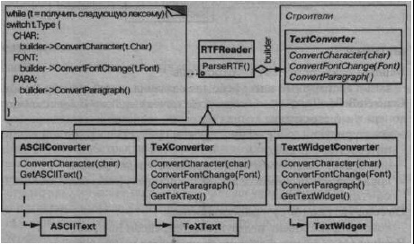
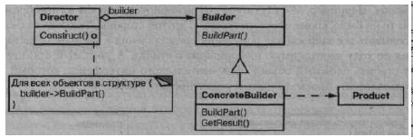
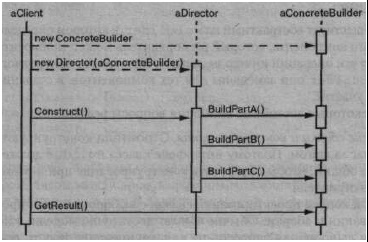

Паттерн Builder
Название и классификация паттерна
Строитель - паттерн, порождающий объекты.
Назначение
Отделяет конструирование сложного объекта от его представления, так что в результате одного и того же процесса конструирования могут получаться раз ные представления.
Мотивация
Программа, в которую заложена возможность распознавания и чтения доку мента в формате RTF (Rich Text Format), должна также «уметь» преобразовывать его во многие другие форматы, например в простой ASCII-текст или в представ ление, которое можно отобразить в виджете для ввода текста. Однако число веро ятных преобразований заранее неизвестно. Поэтому должна быть обеспечена воз можность без труда добавлять новый конвертор.
Таким образом, нужно сконфигурировать класс RTFReader с помощью объек та Text Converter, который мог бы преобразовывать RTF в другой текстовый формат. При разборе документа в формате RTF класс RTFReader вызывает TextConverter для выполнения преобразования. Всякий раз, как RTFReader распознает лексему RTF (простой текст или управляющее слово), для ее преобра зования объекту TextConverter посылается запрос. Объекты TextConverter отвечают как за преобразование данных, так и за представление лексемы в кон кретном формате.
Подклассы TextConverter специализируются на различных преобразованиях и форматах. Например, ASCIIConverter игнорирует запросы на преобразование чего бы то ни было, кроме простого текста. С другой стороны, TeXConverter будет реализовывать все запросы для получения представления в формате редактора TJX, собирая по ходу необходимую информацию о стилях. A Text Widget Converter станет строить сложный объект пользовательского интерфейса, который позво лит пользователю просматривать и редактировать текст.
Класс каждого конвертора принимает механизм создания и сборки сложного объекта и скрывает его за абстрактным интерфейсом. Конвертор отделен от загруз чика, который отвечает за синтаксический разбор RTF-документа.
В паттерне строитель абстрагированы все эти отношения. В нем любой класс конвертора называется строителем, а загрузчик - распорядителем. В применении к рассмотренному примеру строитель отделяет алгоритм интерпретации форма та текста (то есть анализатор RTF-документов) от того, как создается и представля ется документ в преобразованном формате. Это позволяет повторно использовать алгоритм разбора, реализованный в RTFReader, для создания разных текстовых представлений RTF-документов; достаточно передать в RTFReader различные под классы класса Text Converter.
Применимость
Используйте паттерн строитель, когда:- а алгоритм создания сложного объекта не должен зависеть от того, из каких частей состоит объект и как они стыкуются между собой;
- а процесс конструирования должен обеспечивать различные представления конструируемого объекта.
Структура
Участники
- a Builder (TextConverter) - строитель:
- - задает абстрактный интерфейс для создания частей объекта Product;
- a ConcreteBuilder (ASCIIConverter,TeXConverter,TextWidgetConverter)-
конкретный строитель:
- - конструирует и собирает вместе части продукта посредством реализации интерфейса Builder;
- - определяет создаваемое представление и следит за ним;
- - предоставляет интерфейс для доступа к продукту (например, GetASCI IText, GetTextWidget);
- a Director (RTFReader) - распорядитель:
- - конструирует объект, пользуясь интерфейсом Builder;
- a Product (ASCIIText, TeXText, TextWidget) - продукт:
- - представляет сложный конструируемый объект. ConcreteBuilder строит внутреннее представление продукта и определяет процесс его сборки;
- - включает классы, которые определяют составные части, в том числе ин- терфейсы для сборки конечного результата из частей.
Отношения
- а клиент создает объект-распорядитель Director и конфигурирует его нуж- ным объектом-строителем Builder;
- а распорядитель уведомляет строителя о том, что нужно построить очеред- ную часть продукта;
- а строитель обрабатывает запросы распорядителя и добавляет новые части к продукту;
- а клиент забирает продукт у строителя.
Следующая диаграмма взаимодействий иллюстрирует взаимоотношения стро- ителя и распорядителя с клиентом.
